Benchmark / Datasets / esa-wc-v200
esa-wc-v200
ESA WorldCover 2021 land-cover class codes at 10 m.
Source
ESA WorldCover 10 m 2021 v200 COGs in the AWS open data bucket esa-worldcover.
Sample
512×512 pixels at 1/12000 degree, inside one tile.
Representation
Land-cover class codes as published, uint8. NoData is 0.
Licence
© ESA WorldCover project 2021 / Contains modified Copernicus Sentinel data (2021) processed by the ESA WorldCover consortium, under CC BY 4.0.
Lossless results · Folder on GitHub
Samples
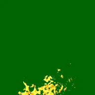
esa-wc-v200-00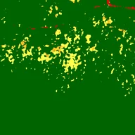
esa-wc-v200-01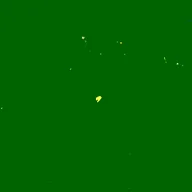
esa-wc-v200-02esa-wc-v200-03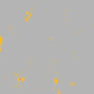
esa-wc-v200-04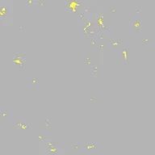
esa-wc-v200-05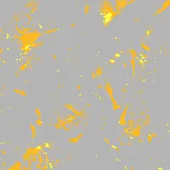
esa-wc-v200-06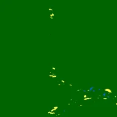
esa-wc-v200-07esa-wc-v200-08esa-wc-v200-09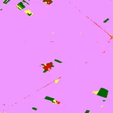
esa-wc-v200-10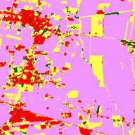
esa-wc-v200-11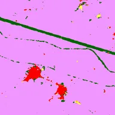
esa-wc-v200-12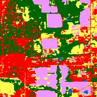
esa-wc-v200-13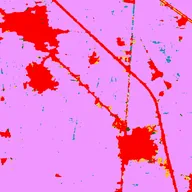
esa-wc-v200-14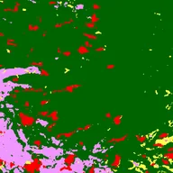
esa-wc-v200-15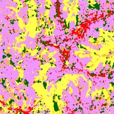
esa-wc-v200-16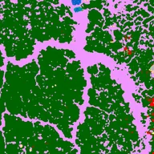
esa-wc-v200-17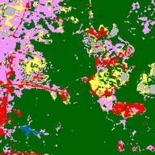
esa-wc-v200-18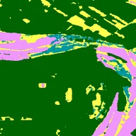
esa-wc-v200-19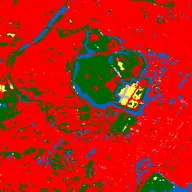
esa-wc-v200-20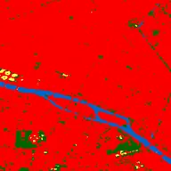
esa-wc-v200-21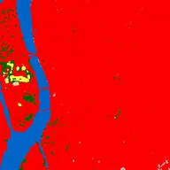
esa-wc-v200-22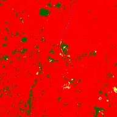
esa-wc-v200-23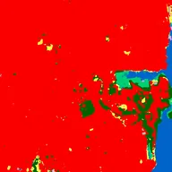
esa-wc-v200-24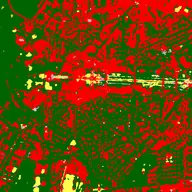
esa-wc-v200-25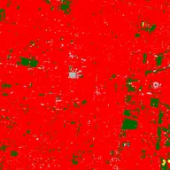
esa-wc-v200-26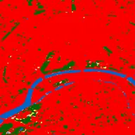
esa-wc-v200-27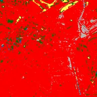
esa-wc-v200-28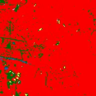
esa-wc-v200-29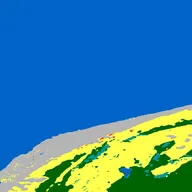
esa-wc-v200-30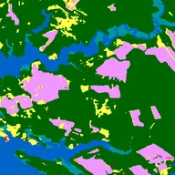
esa-wc-v200-31esa-wc-v200-32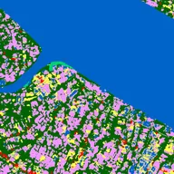
esa-wc-v200-33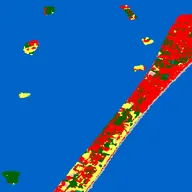
esa-wc-v200-34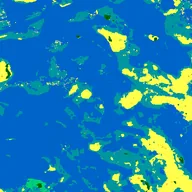
esa-wc-v200-35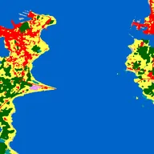
esa-wc-v200-36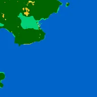
esa-wc-v200-37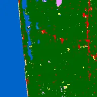
esa-wc-v200-38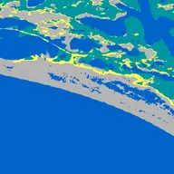
esa-wc-v200-39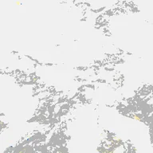
esa-wc-v200-40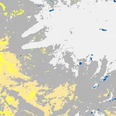
esa-wc-v200-41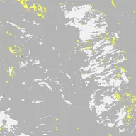
esa-wc-v200-42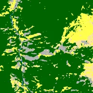
esa-wc-v200-43esa-wc-v200-44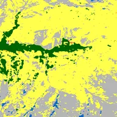
esa-wc-v200-45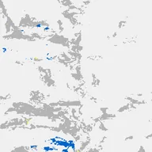
esa-wc-v200-46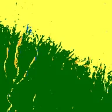
esa-wc-v200-47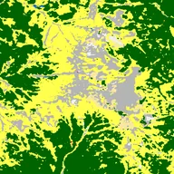
esa-wc-v200-48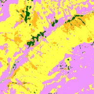
esa-wc-v200-49